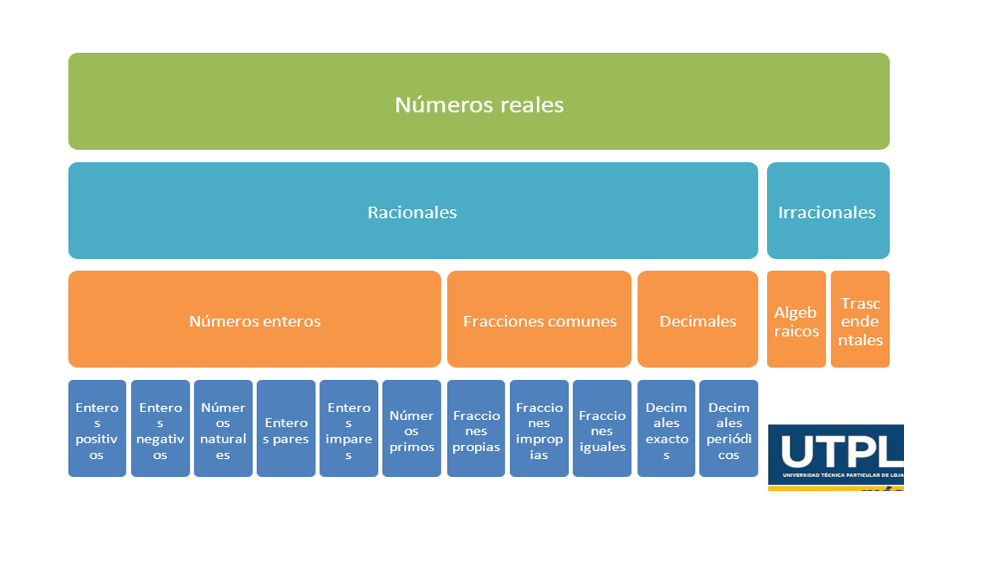
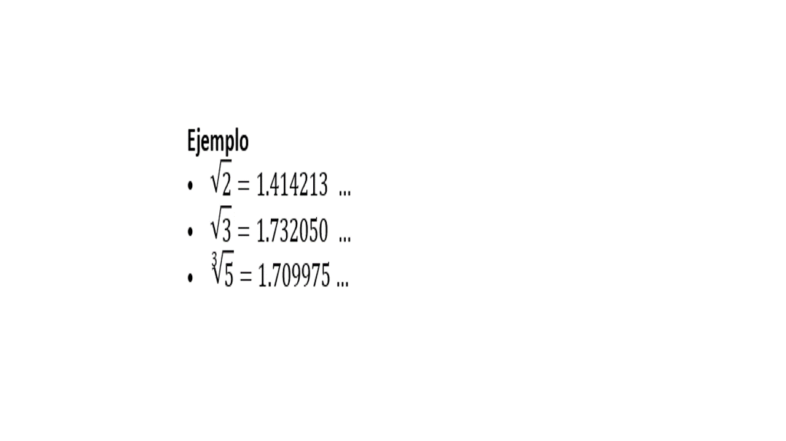
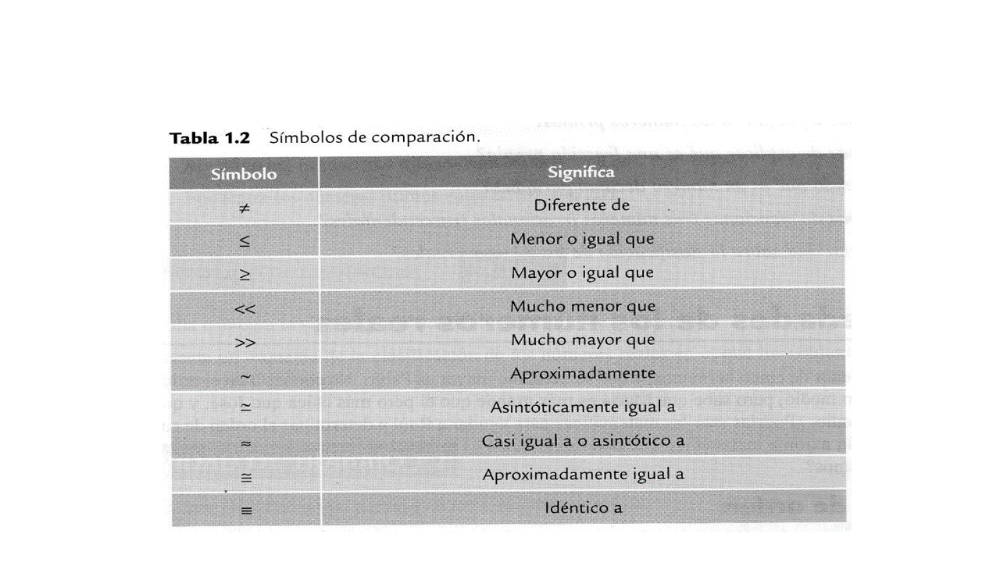

CONTENIDO PRIMER BIMESTRE
Clasificacion de los Números reales
Números Reales
Conjunto de números positivos, negativos, sirven para establecer exacitud.Números enteros(Z)
*Enteros positivos=(0,1,2,3...N)
*Enteros negativos=(-1,-2,-3...N)
*Enteros naturales=(1,2,3,4...N)
*Enteros pares=(-4,-6,2,4,6)
*Enteros impares=(-5,-3,7,9)
*Números primos=(2,3,5,7,9)Fracciones comunes
-Fracciones Propias:numerador<(menor)denominador. 1/2=(0,5)< 6/5=(0,8)
-Fracciones Impropias:numerador>(mayor)denominador. 2/1=(2)>6/5=(1,2)
Fracciones Iguales:numerador=denominador 2/2(1)=5/5(1)
CLASIFICACION DE LOS NÚMEROS REALES (I)
Decimales exactos:el resultado del cociente es finito. 1/2=0,5 5/2=2,5 8/5=1,6
*Decimales periódicos:el resultante del cociente es infinito es decir repetitivo. 1/3=0,333333 26/3=8,66666
CLASIFICACION DE NÚMEROS REALES(II)
*Números irracionales:son aquellos que no se pueden expresar en forma de fracción.
*Irracionales algebraicos:provienen de opreaciones distintas a la división como raiz cuadrada,cúbica,cuarta,etc.
*Irracionales trascendentales:son aquellos simbolos de relevancia matemática.

PROPIEDAD DE LOS NÚMEROS REALES
propiedad de ordenLey de tricotomía:establece comparaciones entre números, variables,ecuaciones y desigualdades,basicamente hace referencia a tres simbolos:
1. existe un numero real a menor que b, denota como a < b
2. existe un numero real a mayopr que b, denotado como a>b
3. existe un numero a que es igual a b, denotado como a=b
PROPIEDAD DE LOS NÚMEROS REALES(I)
propiedad de ordenLey de transitividad:permite trasnferir relaciones de compración entre tres elementos que esten involucrados en la compración

PROPIEDAD DE LOS NUMEROS REALES(II)
<Axioma del supremo: número máximo de un conjunto de datos
Si a ={1,2,3,4,5},el supremo de etse conjunto es 5
Si b ={-5,-4,-3,-2,-1},el supremo de este cinjunto es...
Si a ={1,2,3,4,5}
Si b ={-5,-4,-3,-2,-1},el ínfimo de este conjunto es...
PROPIEDADES ARITMÉTICAS
"El orden de los factores no altera el producto"
"El orden de los sumandos no altera el producto"
Ejemplos:
*La suma de A + B = C es igual B + A = C
La multiplicación de A * B = C es igual que B * A = C
Propiedad asociativa:esta propiedad aplica para tres o más factores y da la posibilidad de agruparlos sin alterar el resultado final
Ejemplos:
La suma de (A + B) + C = D es igual que A + (B + C) = D
La multiplicación de (A * B) * C = D es igual que A * (B * C) = D
Propiedad distributiva:permite reescribir una expresión en su forma desarrollada o factorizada siempre y cuando haya un factor que se repita
Ejemplos:
*Forma factorizada X (A + B)
(4 * 2 + 3 * 2) = 2 * (4 + 3) = 14
(7 * 3 - 2 * 3)= 3 * (7 - 2) = 15
Forma desarrollada (AX + BX)
2 * (4 + 3) = (4 * 2 + 3 * 2) = 14
3 * (7 - 2) = (7 * 3 - 2 * 3) = 15
Elementos neutro: es aquel elemento que al colarlo en una operación no altera el resultado
Ejemplos:
*A +- 0 = A
37 + 0 = 37
12 - 0 = 12
A/1 = A
8/1 = 8
25/1 = 25
La prioridad de los operadores establece que operación debe realizarse primero